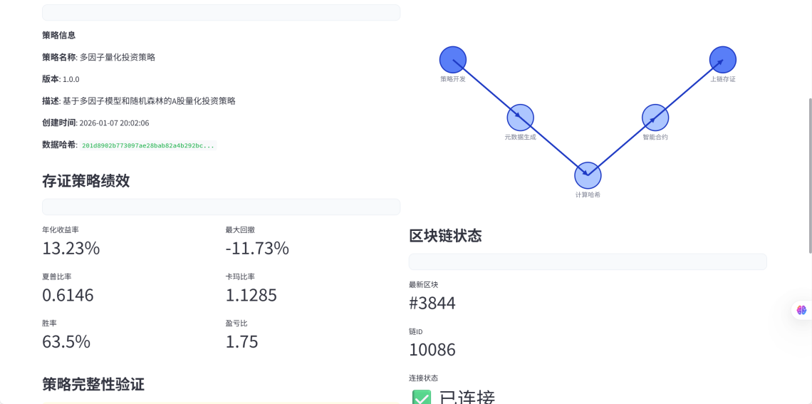
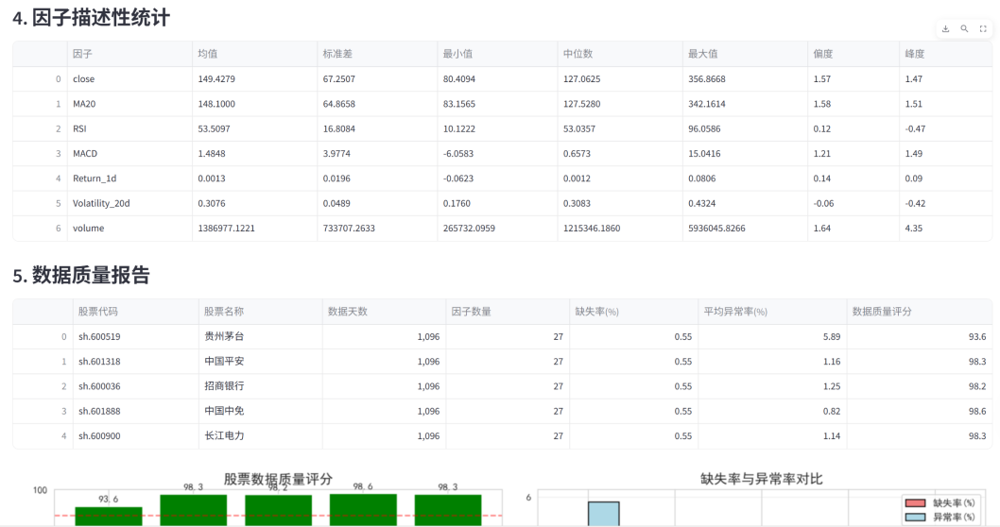

量化分析系统
A Quant Research Workbench
策略写完不算完，我把它做成了一个能跑、能查、能验证的系统。
01 / Question一个策略从数据到界面，最少需要哪几个模块？
大部分课程项目停在“回测跑通”。我想再往前一步：数据有没有质量报告？策略文件能不能被验证？一个不看代码的人，能不能在界面上自己点一遍？
所以这个系统有四个模块：数据、策略、存证、界面。它们不是四个作业拼在一起，而是一条完整的链路。
02 / Data从公开数据接口开始
用 Baostock 取 5 只 A 股 3 年的日频数据，计算 MA、RSI、MACD 三类技术指标；对缺失值做前向填充与线性插值，对异常值做 IQR 与范围限制；最后生成一份数据质量报告，记录完整性、异常值比例与每只股票的清洗结果。
因子部分使用六个维度：市值、反转、估值、换手率、动量、波动率。每个因子做横截面标准化，再用随机森林预测下月收益，按预测值排序。
03 / Method四个模块，一条链路
- 01 / Data数据
Baostock 取数、技术指标、清洗、质量报告。
- 02 / Strategy策略
六因子标准化、随机森林、月度调仓回测。
- 03 / Evidence存证
策略文件哈希上链，链上比对验证一致性。
- 04 / Interface界面
Streamlit 三标签页，把三个模块合成一个入口。
存证模块用本地以太坊私链和 Solidity 智能合约：把策略报告、CSV 与图片打包，计算元数据哈希，写入链上；再提取年化、回撤、夏普、卡玛四个关键指标单独上链。验证时重新计算本地哈希，与链上记录比对。
这一部分的意义不是“区块链很酷”，而是回答一个很实际的问题：如果回测报告可以被随手改动，面试官凭什么相信它？
04 / Result8 个文件上链，一套可点开的界面
| 指标 | 值 | 说明 |
|---|---|---|
| 年化收益 | 13.23% | 系统内参数，月度调仓 |
| 最大回撤 | −11.73% | 同一区间 |
| 夏普比率 | 0.6146 | 系统内计算 |
| 卡玛比率 | 1.1285 | 年化 / 最大回撤 |
| 上链文件 | 8 | 报告、CSV、PNG |
| 区块高度 | #3844 | 本地私链 |
这个 13.23% 与 01 号多因子策略不是同一套组合：样本只有 5 只股票，因子是课程给定的六个，随机森林只用于排序。它证明的是工程完整度，不是研究深度。


05 / Limitation它是一个工作台，不是一个生产系统
- 样本只有 5 只股票，不足以支撑任何统计结论。
- 六个因子由课程给定，不是我挖出来的；随机森林只用于排序，不是完整的 alpha 模型。
- 链是本地私链，存证解决的是“文件一致性”，不是“策略有效性”。
- 没有实盘、没有交易接口、没有风控约束。
06 / Next如果再做一次
- 把股票池扩到全市场，做因子正交化与行业中性。
- 把回测信号与实盘信号分开，避免同一套代码既当裁判又当运动员。
- 把存证从本地私链换到测试网，让外部可以独立验证。
- 补交易成本、容量分析与纸面交易。